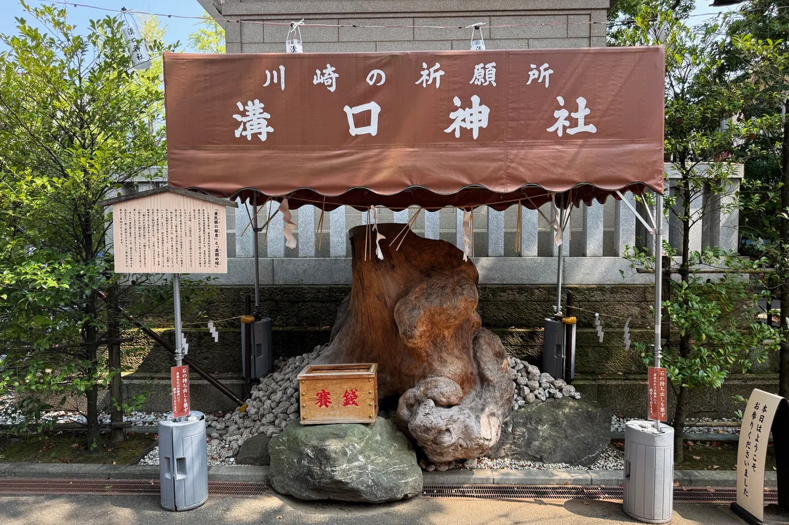
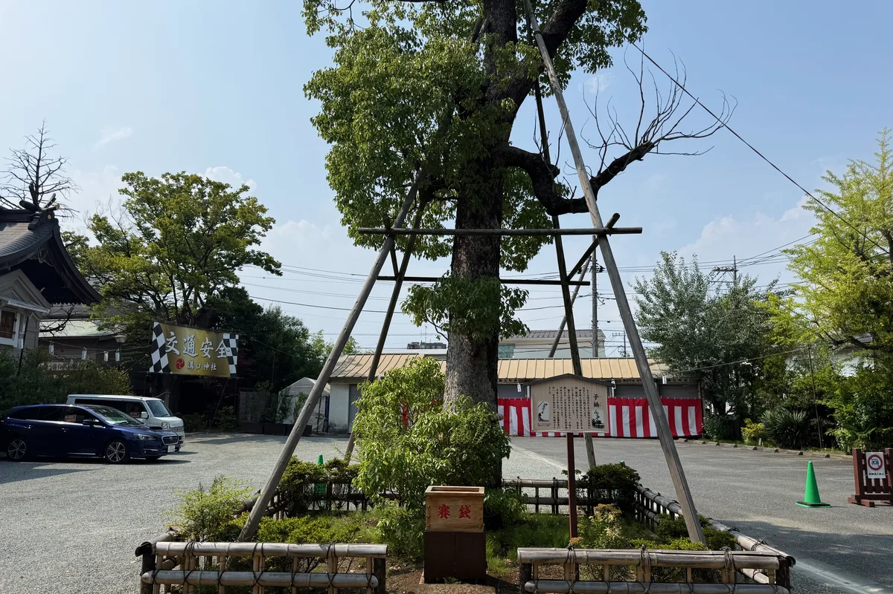

入口
いりぐち始点 ／ 次: 大鳥居
地図と順路で、境内を歩くように。
気になる場所を選ぶと、写真とご案内をご覧いただけます。左右に動かすと、境内の続きをご覧いただけます。


参道の右手(東側)にあります。
参拝の前に手と口を清めます。隣には絵馬掛けがあります。


本殿の手前にあります。
本殿の手前にある拝殿です。厄除け・安産祈願・七五三など、各種御祈祷はこちらで執り行われます。拝殿内にはエアコンを備えております。


社殿の右手(東側)から回り込めます。
改名150年記念事業で改修された、社殿をめぐる回廊です。


参道の左手(西側)にあります。
御祈祷の受付、お守り・御札の授与、お焚き上げなどの窓口です。化粧室・授乳室もこちらです。





